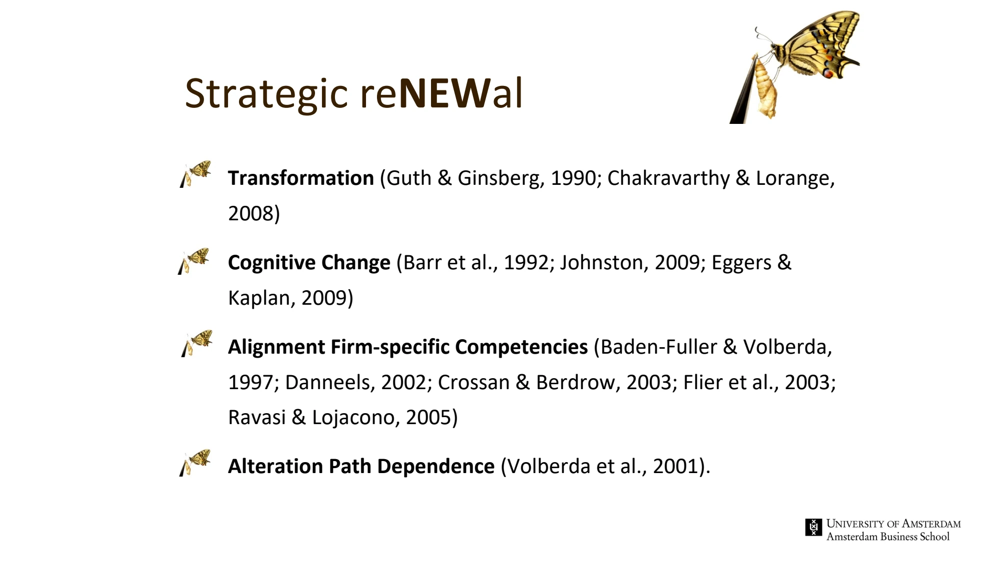

The framework
| Concept | Core meaning | What to watch |
|---|---|---|
| Selection | Population ecology emphasizes structural inertia; institutional theory emphasizes industry norms; evolutionary views emphasize established routines. | Organizations can become locked into patterns that once worked. |
| Adaptation | Resource-based, dynamic-capability, behavioral, learning and strategic-choice views allow an active role for management. | Resources, slack, learning and managerial action affect the capacity to renew. |
| Exploitation | Refine existing competences, routines and fit. Associated with incremental change and single-loop learning. | A competence trap: continued success with existing skills makes alternatives harder to notice. |
| Exploration | Develop new competences, experiment and challenge assumptions. Associated with unlearning, double-loop learning and more radical change. | A renewal trap: repeated change without consolidation can prevent capabilities from becoming productive. |
| Internal renewal | New businesses, new products, downsizing and reorganization within the organization. | Can preserve control, but depends on internal resources and willingness to change. |
| External renewal | Mergers, takeovers, joint ventures and alliances. | Provides access to external capabilities, with integration and coordination demands. |
Key distinctions
Single-loop and double-loop learning
Single-loop learning improves action while retaining the governing assumptions. Double-loop learning questions those assumptions: not only whether execution is efficient, but whether the chosen goal or operating logic still makes sense.
Renewal is not change for its own sake
The lecture treats renewal as a transformation of competences and cognition, an adjustment of alignment, and an alteration of path dependence. An organization can change its chart repeatedly while leaving the underlying strategic assumptions untouched.
How to use it
- Identify what the current strategy exploits successfully.
- Look for signals that existing competences are becoming less useful.
- Define exploration that tests a new assumption, rather than merely adding activity.
- Choose internal or external renewal mechanisms and plan how new learning will be retained.
Keep in mind
Selection and adaptation are theoretical lenses. Neither establishes that managers have complete control or that change is impossible. Exploration and exploitation describe different learning needs; neither is universally superior.
How do the competence trap and renewal trap differ?
Reveal the explanation
The competence trap overuses existing strengths and neglects alternatives. The renewal trap keeps changing without consolidating useful capabilities.
Read the classroom original
Complete pages from the supplied lecture slides. Select a page to read, enlarge or browse its extracted text. Page numbers refer to the PDF’s physical page order.
